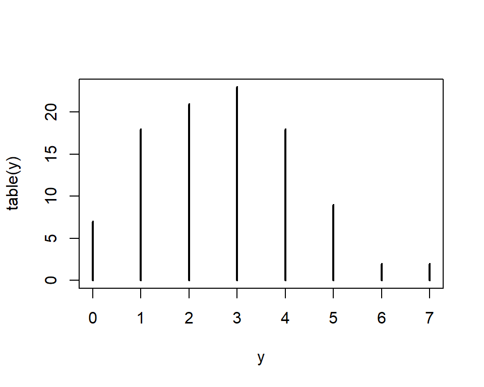

h|1i|0g|3h|2c|1h|2a|1r|3t|2e|1r|2{userchile}
Joshua Kunst, Julio 2017
Advertencia
Todos los gráficos de , 3D y la combinación de estos en esta presentación son ilustrativos y no representan el estilo ni el gusto de quien lo presenta
Quien soy y que haré(mos)
Quien soy
- De día hago como que trabajo en riesgo (70%)
- En Proyectos Personales (30%)
- Me gusta escribir código (en R)
- Y compartirlo en jkunst.com
- De casualidad soy Estadístico . Así mismo useR
Que haremos
- Revisar formas de visualizar en R
- Qué es highcharts?
- Cómo usar highcharter?
- Función genérica
hchart
- Ejemplos simples, y quizás algunos más complejos. Integración con
shiny, rmarkdown. Si el tiempo da
Por que lo haríamos?
- La visualización ayuda a descubrir y explicar
- En muchos casos resume un gran desarrollo que hemos hecho
- Y bueno, en general es mejor recibido si es claro y atractivo

R base
Haciendo visualizaciones desde 2000 AC

R base
Rápido para hacer cosas simples, pero no escala de la mejor manera.

ggplot2 & Lattice
lattice basado en trellisggplot2 basado en gramar of graphics- Paquetes con buen soporte en datos multivariados (colores, facets, …)
ggplot2 es el rey de los gráficos estáticos- Muy flexible dado que existe la posibilidad de crear extensiones + temas
Consideraciones
R es muy flexible lo que lleva a:
- Tener gran variedad de opciones
- Considerar que cada paquete tiene su propia sintaxis
- Peeero siempre estarás acompañado de la buena comunidad que R posee
Highcharts
- highcharts es una popular -entre otras- librería de javascript de visualización
- Muy
vieja madura y flexible. Muchos plugins!
- Muchos tipos de gráficos, incluyendo financieros y mapas
- highcharter es un poco más que el wrapper highcharts para R. Por lo que hereda todas sus características. Yay!